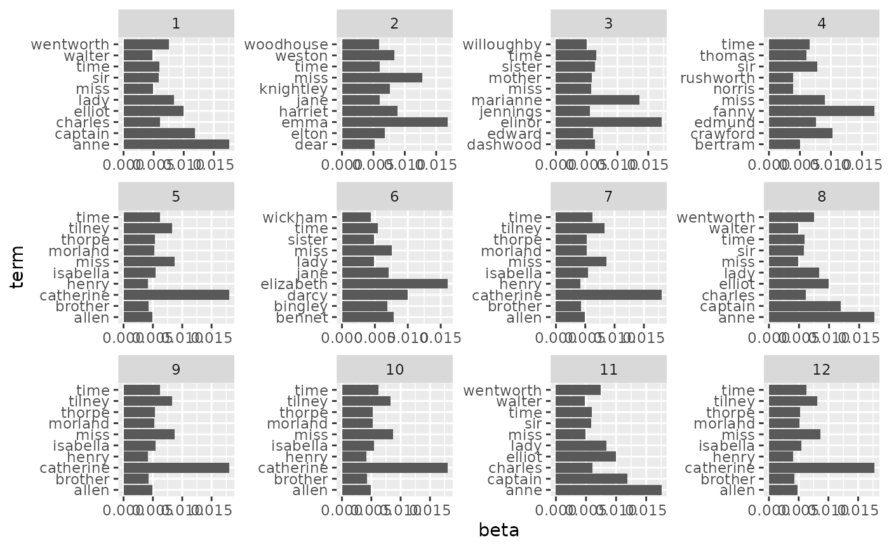

Tidy topic models fit by the stm package. The arguments and return values
are similar to lda_tidiers().
An STM fitted model object from either stm::stm() or
stm::estimateEffect()
Which matrix to tidy:
the beta matrix (per-term-per-topic, default)
the gamma/theta matrix (per-document-per-topic); the stm package calls this the theta matrix, but other topic modeling packages call this gamma
the FREX matrix, for words with high frequency and exclusivity
the lift matrix, for words with high lift
Whether beta/gamma/theta should be on a log scale, default FALSE
Optional vector of document names for use with per-document-per-topic tidying
Extra arguments for tidying, such as w as used in
stm::calcfrex()
For augment, the data given to the stm function, either
as a dfm from quanteda or as a tidied table with "document" and
"term" columns
tidy returns a tidied version of either the beta, gamma, FREX, or
lift matrix if called on an object from stm::stm(), or a tidied version of
the estimated regressions if called on an object from stm::estimateEffect().
glance returns a tibble with exactly one row of model summaries.
augment must be provided a data argument, either a
dfm from quanteda or a table containing one row per original
document-term pair, such as is returned by tdm_tidiers, containing
columns document and term. It returns that same data with an additional
column .topic with the topic assignment for that document-term combination.
library(dplyr)
library(ggplot2)
library(stm)
#> stm v1.3.6 successfully loaded. See ?stm for help.
#> Papers, resources, and other materials at structuraltopicmodel.com
library(janeaustenr)
austen_sparse <- austen_books() %>%
unnest_tokens(word, text) %>%
anti_join(stop_words) %>%
count(book, word) %>%
cast_sparse(book, word, n)
#> Joining with `by = join_by(word)`
topic_model <- stm(austen_sparse, K = 12, verbose = FALSE)
# tidy the word-topic combinations
td_beta <- tidy(topic_model)
td_beta
#> # A tibble: 166,968 × 3
#> topic term beta
#> <int> <chr> <dbl>
#> 1 1 1 1.18e- 4
#> 2 2 1 1.15e-19
#> 3 3 1 5.51e- 5
#> 4 4 1 1.33e-19
#> 5 5 1 4.20e- 5
#> 6 6 1 2.68e- 5
#> 7 7 1 4.20e- 5
#> 8 8 1 1.18e- 4
#> 9 9 1 4.20e- 5
#> 10 10 1 4.20e- 5
#> # … with 166,958 more rows
# Examine the topics
td_beta %>%
group_by(topic) %>%
slice_max(beta, n = 10) %>%
ungroup() %>%
ggplot(aes(beta, term)) +
geom_col() +
facet_wrap(~ topic, scales = "free")

# high FREX words per topic
tidy(topic_model, matrix = "frex")
#> # A tibble: 166,968 × 2
#> topic term
#> <int> <chr>
#> 1 1 elliot
#> 2 1 wentworth
#> 3 1 walter
#> 4 1 anne
#> 5 1 russell
#> 6 1 musgrove
#> 7 1 louisa
#> 8 1 charles
#> 9 1 uppercross
#> 10 1 kellynch
#> # … with 166,958 more rows
# high lift words per topic
tidy(topic_model, matrix = "lift")
#> # A tibble: 166,968 × 2
#> topic term
#> <int> <chr>
#> 1 1 acknowledgement
#> 2 1 benwick
#> 3 1 henrietta
#> 4 1 lyme
#> 5 1 musgrove
#> 6 1 uppercross
#> 7 1 walter
#> 8 1 harville
#> 9 1 kellynch
#> 10 1 russell
#> # … with 166,958 more rows
# tidy the document-topic combinations, with optional document names
td_gamma <- tidy(topic_model, matrix = "gamma",
document_names = rownames(austen_sparse))
td_gamma
#> # A tibble: 72 × 3
#> document topic gamma
#> <chr> <int> <dbl>
#> 1 Sense & Sensibility 1 0.00000260
#> 2 Pride & Prejudice 1 0.00000279
#> 3 Mansfield Park 1 0.00000268
#> 4 Emma 1 0.00000230
#> 5 Northanger Abbey 1 0.00000761
#> 6 Persuasion 1 0.333
#> 7 Sense & Sensibility 2 0.00000472
#> 8 Pride & Prejudice 2 0.00000483
#> 9 Mansfield Park 2 0.00000393
#> 10 Emma 2 1.00
#> # … with 62 more rows
# using stm's gardarianFit, we can tidy the result of a model
# estimated with covariates
effects <- estimateEffect(1:3 ~ treatment, gadarianFit, gadarian)
glance(effects)
#> # A tibble: 1 × 3
#> k docs uncertainty
#> <int> <int> <chr>
#> 1 3 341 Global
td_estimate <- tidy(effects)
td_estimate
#> # A tibble: 6 × 6
#> topic term estimate std.error statistic p.value
#> <int> <chr> <dbl> <dbl> <dbl> <dbl>
#> 1 1 (Intercept) 0.437 0.0241 18.1 1.13e-51
#> 2 1 treatment -0.153 0.0322 -4.75 3.00e- 6
#> 3 2 (Intercept) 0.212 0.0224 9.44 6.18e-19
#> 4 2 treatment 0.242 0.0331 7.31 1.93e-12
#> 5 3 (Intercept) 0.351 0.0231 15.2 2.57e-40
#> 6 3 treatment -0.0892 0.0320 -2.79 5.58e- 3